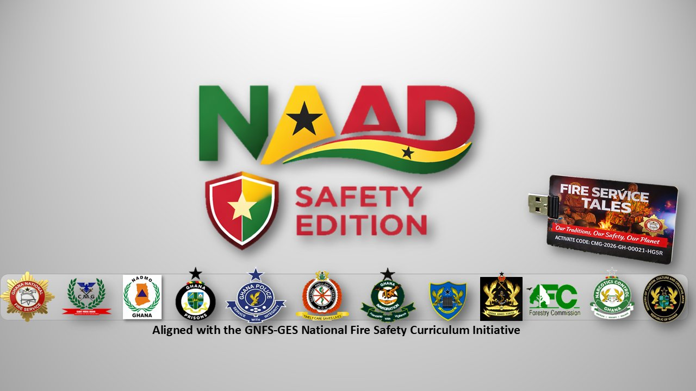
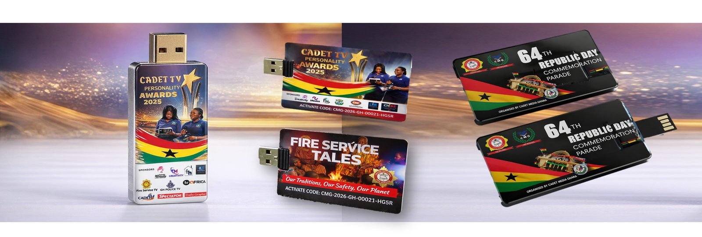
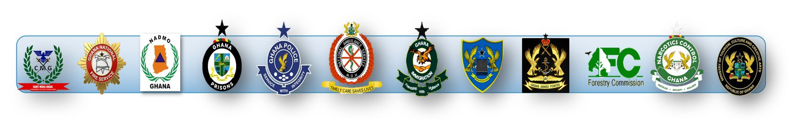

Who we are and what the Cadet TV Personality Awards stands for.
The Cadet TV Personality Awards is an initiative by Cadet Media Ghana, aimed at discovering, nurturing, and celebrating young broadcasting talent in Ghana. The program provides a platform for students to develop and showcase their skills in journalism, news reporting, and media production.
Students register under one of 15 nominee categories spanning international, local, sports and entertainment news, plus weather presenting. Each school may field one nominee per category. Registered nominees appear on the site automatically, each with an official voting code, and the public votes for their favorites via SMS/USSD. A panel of judges also scores performances, shown on our Judges' Ratings page.
Cadet Media Ghana — cadetmediaoffice@gmail.com
The Cadet TV Personality Awards is a flagship programme of Cadet Media Ghana, implemented under the National Academic Assessment Drive (NAAD). The programme uses media to nurture young talent and build knowledge, and it includes a dedicated safety segment in which participating cadets learn from officers of national safety and security agencies.

NAAD is a national learning, evaluation and certification system created by Cadet Media Ghana, in partnership with the Ghana National Fire Service and national agencies of Ghana. It comes in two editions: the Academic Edition, with gamified, curriculum-based learning for Primary 1 to SHS 3 in line with the Ghana Education Service curriculum, and the Safety Edition, on emergency preparedness and national safety. It is delivered on a pendrive, and it works offline, so schools in rural and low-connectivity areas get the same access as those in the cities.

Cadet Media Ghana partners with the Ghana National Fire Service and a range of national safety and security agencies to bring this content to cadets.
